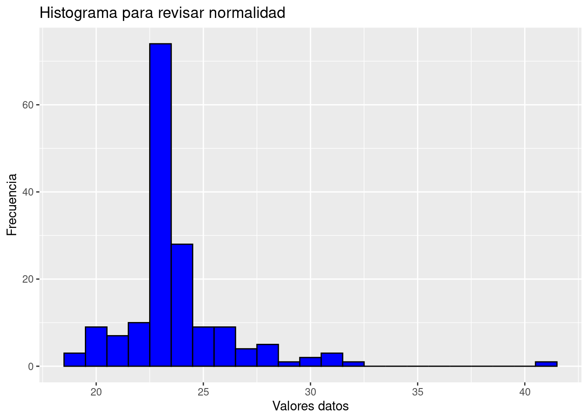
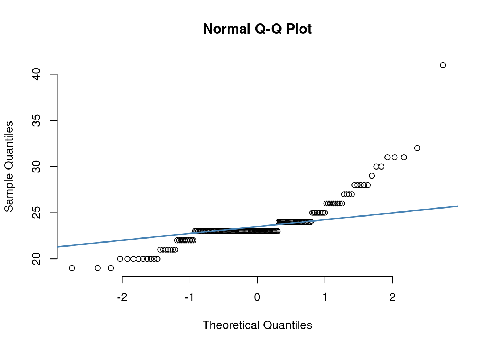

Chapter 6 Estadística bivariantes
6.1 Ejercicio 1
EJEMPLO
library(haven)
estudiantes <- read_spss("Estudiantes1.sav")
tb <- table(estudiantes$tabac37, estudiantes$Sexo)
dimnames(tb) = list( c("No", "Sí"), c("Hombre", "Mujer"))
addmargins(tb)## Hombre Mujer Sum
## No 25 83 108
## Sí 20 38 58
## Sum 45 121 166## Hombre Mujer Sum
## No 55.6 68.6 124.2
## Sí 44.4 31.4 75.8
## Sum 100.0 100.0 200.06.2 Ejercicio 2
EJEMPLO
tb <- table(estudiantes$actf36, estudiantes$Sexo)
dimnames(tb) = list( c("Sedentario poco activo", "Moderadamente activo", "Activo"),
c("Hombre", "Mujer"))
addmargins(tb)## Hombre Mujer Sum
## Sedentario poco activo 11 77 88
## Moderadamente activo 8 27 35
## Activo 24 15 39
## Sum 43 119 162## Hombre Mujer Sum
## Sedentario poco activo 25.6 64.7 90.3
## Moderadamente activo 18.6 22.7 41.3
## Activo 55.8 12.6 68.4
## Sum 100.0 100.0 200.06.3 Ejercicio 3
EJEMPLO
Por ejemplo si queremos hacer un subanálisis en los que tienen 23 años.
tb <- table(estudiantes_23$tabac37, estudiantes_23$Sexo)
dimnames(tb) = list( c("No", "Sí"), c("Hombre", "Mujer"))
addmargins(tb)## Hombre Mujer Sum
## No 11 45 56
## Sí 2 16 18
## Sum 13 61 74## Hombre Mujer Sum
## No 84.6 73.8 158.4
## Sí 15.4 26.2 41.6
## Sum 100.0 100.0 200.06.4 Ejercicio 3
EJEMPLO
## Min. 1st Qu. Median Mean 3rd Qu. Max.
## 19.00 23.00 23.00 23.73 24.00 41.00## [1] 2.631208## [1] 1## $`1`
## Min. 1st Qu. Median Mean 3rd Qu. Max.
## 19.00 22.00 23.00 23.91 25.00 41.00
##
## $`2`
## Min. 1st Qu. Median Mean 3rd Qu. Max.
## 19.00 23.00 23.00 23.67 24.00 32.00## Min. 1st Qu. Median Mean 3rd Qu. Max.
## 44.40 55.55 61.05 64.16 71.45 103.50## [1] 11.56629## [1] 15.9## $`1`
## Min. 1st Qu. Median Mean 3rd Qu. Max.
## 56.10 67.90 75.00 74.64 79.90 93.40
##
## $`2`
## Min. 1st Qu. Median Mean 3rd Qu. Max.
## 44.40 54.10 58.40 60.26 63.00 103.506.5 Ejercicio 4
EJEMPLO
# Cargar los paquetes necesarias
library(ggplot2)
# Generar datos para el ejemplo
set.seed(123)
x <- seq(1, 10, by = 0.5)
y_positive <- x + rnorm(length(x), mean = 0, sd = 1) # Correlación positiva
y_negative <- -x + rnorm(length(x), mean = 0, sd = 1) # Correlación negativa
y_no_corr <- rnorm(length(x), mean = 0, sd = 1) # Sin correlación
# Calcular las correlaciones
cor_positive <- cor(x, y_positive, method = "pearson")
cor_negative <- cor(x, y_negative, method = "pearson")
cor_no_corr <- cor(x, y_no_corr, method = "pearson")
# Generar los gráficos
plot_positive <- ggplot(data = data.frame(x, y_positive), aes(x, y_positive)) +
geom_point() +
geom_smooth(method = "lm", color = "blue") +
labs(title = paste("Positive Correlation (correlation =", round(cor_positive, 2), ")"))
plot_negative <- ggplot(data = data.frame(x, y_negative), aes(x, y_negative)) +
geom_point() +
geom_smooth(method = "lm", color = "red") +
labs(title = paste("Negative Correlation (correlation =", round(cor_negative, 2), ")"))
plot_no_corr <- ggplot(data = data.frame(x, y_no_corr), aes(x, y_no_corr)) +
geom_point() +
geom_smooth(method = "lm", color = "green") +
labs(title = paste("No Correlation (correlation =", round(cor_no_corr, 2), ")"))
# Mostrar los gráficos
print(plot_positive)## `geom_smooth()` using formula = 'y ~ x'## `geom_smooth()` using formula = 'y ~ x'## `geom_smooth()` using formula = 'y ~ x'6.6 Ejercicio 5
EJEMPLO
base <- read_spss("base1.sav")
with(base, cor.test(peso_m, altura_m, alternative="two.sided", method = "spearman"))##
## Spearman's rank correlation rho
##
## data: peso_m and altura_m
## S = 24127530, p-value < 0.00000000000000022
## alternative hypothesis: true rho is not equal to 0
## sample estimates:
## rho
## 0.36533926.7 Ejercicio 6
EJEMPLO
##
## Shapiro-Wilk normality test
##
## data: estudiantes$Edad
## W = 0.77873, p-value = 0.00000000000001464##
## Asymptotic one-sample Kolmogorov-Smirnov test
##
## data: estudiantes$Edad
## D = 1, p-value < 0.00000000000000022
## alternative hypothesis: two-sidedR code - histograma
# Creating the histogram with ggplot2
ggplot(estudiantes, aes(x = Edad)) +
geom_histogram(binwidth = 1, color = "black", fill = "blue") +
labs(title = "Histograma para revisar normalidad",
x = "Valores datos",
y = "Frecuencia")
R code - gráfico QQ
qqnorm(estudiantes$Edad, pch = 1, frame = FALSE)
qqline(estudiantes$Edad, col = "steelblue", lwd = 2)
## [1] 65 666.8 Ejercicio 7
EJEMPLO
pie chart
library(tidyverse); library(ggplot2) # Load ggplot2
data <- data.frame(group=LETTERS[1:5], value=c(13,7,9,21,2)) # Create Data
ggplot(data, aes(x="", y=value, fill=group)) +
geom_bar(stat="identity", width=1, color="white") +
coord_polar("y", start=0) + # Basic piechart
theme_void() # remove background, grid, numeric labelsBarplot
library(ggplot2) # Load ggplot2
data <- data.frame(name=c("A","B","C","D","E") ,value=c(3,12,5,18,45)) # Create data
ggplot(data, aes(x=name, y=value)) + geom_bar(stat = "identity")# BarplotBoxplot
library(tidyverse); library(hrbrthemes); library(viridis)# Libraries
# create a dataset
data <- data.frame(
name=c( rep("A",500), rep("B",500), rep("B",500), rep("C",20), rep('D', 100) ),
value=c(rnorm(500, 10, 5), rnorm(500, 13, 1), rnorm(500, 18, 1), rnorm(20, 25, 4),
rnorm(100, 12, 1)))
# Plot
Caja <- data %>%
ggplot( aes(x=name, y=value, fill=name)) + geom_boxplot() +
scale_fill_viridis(discrete = TRUE, alpha=0.6) +
geom_jitter(color="black", size=0.4, alpha=0.9) +
theme_ipsum() + theme( legend.position="none", plot.title = element_text(size=11)) +
ggtitle("A boxplot with jitter") + xlab("")Boxplot
Gráficos de dispersión
6.9 Ejercicio 8
EJEMPLO
- Comparar el hábito tabáquico (si/no) de los que tiene cáncer de pulmón o no.
# Example data
data <- data.frame(
SmokingHabit = c("Yes", "No", "Yes", "No", "Yes", "No", "No", "Yes", "Yes", "No"),
LungCancer = c("Yes", "No", "Yes", "No", "Yes", "No", "No", "Yes", "No", "No")
)
# Create a contingency table
contingency_table <- table(data$SmokingHabit, data$LungCancer)
# Perform the chi-square test
chi_square_result <- chisq.test(contingency_table)
# Print the chi-square test result
print(chi_square_result)##
## Pearson's Chi-squared test with Yates' continuity correction
##
## data: contingency_table
## X-squared = 3.75, df = 1, p-value = 0.052816.10 Ejercicio 9
EJEMPLO
# Cargar la librería necesaria
library(stats)
# Ejemplo de datos (reemplaza esto con tus propios datos)
tratamiento1 <- c(140, 145, 150, 142, 138)
tratamiento2 <- c(148, 153, 147, 146, 150)
tratamiento3 <- c(135, 138, 142, 137, 139)
# Realizar el test de Kruskal-Wallis
kruskal_test <- kruskal.test(list(tratamiento1, tratamiento2, tratamiento3))
# Imprimir los resultados del test
print(kruskal_test)##
## Kruskal-Wallis rank sum test
##
## data: list(tratamiento1, tratamiento2, tratamiento3)
## Kruskal-Wallis chi-squared = 9.0837, df = 2, p-value = 0.010656.11 Ejercicio 10
EJEMPLO
# Cargar la librería necesaria
library(stats)
# Ejemplo de datos (reemplaza esto con tus propios datos)
hombres <- c(3.2, 3.4, 3.1, 3.5, 3.0)
mujeres <- c(2.8, 3.0, 2.9, 3.2, 2.7)
# Realizar el test de Mann-Whitney U
mann_whitney_test <- wilcox.test(hombres, mujeres)
# Imprimir los resultados del test
print(mann_whitney_test)##
## Wilcoxon rank sum test with continuity correction
##
## data: hombres and mujeres
## W = 22, p-value = 0.05855
## alternative hypothesis: true location shift is not equal to 06.12 Ejercicio 11
EJEMPLO
# Ejemplo de datos
peso <- c(60, 70, 65, 80, 75)
altura <- c(160, 175, 168, 180, 172)
# Realizar el test de correlación de Pearson
correlation_test <- cor.test(peso, altura, method = "spearman")
# Imprimir los resultados del test
print(correlation_test)##
## Spearman's rank correlation rho
##
## data: peso and altura
## S = 2, p-value = 0.08333
## alternative hypothesis: true rho is not equal to 0
## sample estimates:
## rho
## 0.96.13 Ejercicio 12
EJEMPLO
# Cargar la librería necesaria
#library(stats)
# Ejemplo de datos (reemplaza esto con tus propios datos)
consumo_alcohol <- c("Sí", "No", "Sí", "No", "Sí", "Sí", "No", "No", "No", "No")
grupo <- c("Fin de semana", "No bebedores", "Bebedores habituales", "Bebedores habituales", "Fin de semana", "No bebedores", "No bebedores", "Fin de semana", "No bebedores", "Bebedores habituales")
# Crear una tabla de contingencia
contingency_table <- table(consumo_alcohol, grupo)
# Realizar el test de Chi-Cuadrado de Independencia
chi_square_test <- chisq.test(contingency_table)
# Imprimir los resultados del test
print(chi_square_test)##
## Pearson's Chi-squared test
##
## data: contingency_table
## X-squared = 1.3194, df = 2, p-value = 0.5176.14 Ejercicio 13
EJEMPLO
# Ejemplo de datos (reemplaza esto con tus propios datos)
peso_inicial <- c(70, 75, 68, 80, 72)
peso_despues <- c(60, 50, 56, 70, 65)
# Realizar el t-test para muestras relacionadas
paired_t_test <- t.test(peso_inicial, peso_despues, paired = TRUE)
# Imprimir los resultados del test
print(paired_t_test)##
## Paired t-test
##
## data: peso_inicial and peso_despues
## t = 4.0599, df = 4, p-value = 0.01535
## alternative hypothesis: true mean difference is not equal to 0
## 95 percent confidence interval:
## 4.046489 21.553511
## sample estimates:
## mean difference
## 12.86.15 Ejercicio 14
EJEMPLO
# Ejemplo de datos (reemplaza esto con tus propios datos)
peso_inicial <- c(70, 75, 68, 80, 72)
peso_despues <- c(68, 73, 66, 78, 70)
# Realizar el test de Wilcoxon para muestras relacionadas
wilcoxon_test <- wilcox.test(peso_inicial, peso_despues, paired = TRUE, exact = FALSE)
# Imprimir los resultados del test
print(wilcoxon_test)##
## Wilcoxon signed rank test with continuity correction
##
## data: peso_inicial and peso_despues
## V = 15, p-value = 0.03689
## alternative hypothesis: true location shift is not equal to 06.16 Ejercicio 15
EJEMPLO
# Ejemplo de datos (reemplaza esto con tus propios datos)
antes <- c("Sí", "No", "No", "Sí", "No", "Sí", "Sí", "No", "Sí", "No")
despues <- c("Sí", "No", "Sí", "Sí", "No", "Sí", "No", "Sí", "Sí", "Sí")
# Crear una tabla de contingencia 2x2
tabla_contingencia <- table(antes, despues)
# Realizar el test de McNemar
mcnemar_test <- mcnemar.test(tabla_contingencia)
# Imprimir los resultados del test
print(mcnemar_test)##
## McNemar's Chi-squared test with continuity correction
##
## data: tabla_contingencia
## McNemar's chi-squared = 0.25, df = 1, p-value = 0.61716.17 Ejercicio 16
EJEMPLO
ANOVA - posthoc (paramétrico)
# Create a sample dataset
data <- data.frame(
group = rep(c("A", "B", "C"), each = 10),
weight = c(76, 77, 78, 70, 71, 72, 75, 76, 79, 73,
75, 78, 80, 81, 82, 85, 70, 73, 75, 79,
100, 102, 105, 108, 110, 112, 98, 101, 103, 107)
)## mean sd data:n
## A 74.7 3.056868 10
## B 77.8 4.541170 10
## C 104.6 4.575296 10data %>%
ggplot(aes(x=group, y=weight, fill=group)) + geom_boxplot() +
scale_fill_viridis(discrete = TRUE, alpha=0.6) +
geom_jitter(color="black", size=0.4, alpha=0.9) +
theme_ipsum() + theme( legend.position="none", plot.title = element_text(size=11)) +
ggtitle("A boxplot with jitter") + xlab("")## Df Sum Sq Mean Sq F value Pr(>F)
## group 2 5406 2703 159.3 0.00000000000000113 ***
## Residuals 27 458 17
## ---
## Signif. codes: 0 '***' 0.001 '**' 0.01 '*' 0.05 '.' 0.1 ' ' 1## Tukey multiple comparisons of means
## 95% family-wise confidence level
##
## Fit: aov(formula = weight ~ group, data = data)
##
## $group
## diff lwr upr p adj
## B-A 3.1 -1.467336 7.667336 0.2299903
## C-A 29.9 25.332664 34.467336 0.0000000
## C-B 26.8 22.232664 31.367336 0.0000000Kruskal Wallis - posthoc (no paramétrico)
##
## Kruskal-Wallis rank sum test
##
## data: weight by group
## Kruskal-Wallis chi-squared = 20.534, df = 2, p-value = 0.00003476El p-valor es <0.05 por lo tanto las medianas de peso para los distintos tipos de actividad física son diferentes.
library(FSA)
options(scipen=999) #Este comando es para desactivar la citación científica
dunnTest(weight ~ group, data = data)## Dunn (1964) Kruskal-Wallis multiple comparison## p-values adjusted with the Holm method.## Comparison Z P.unadj P.adj
## 1 A - B -1.067871 0.28557885850 0.28557885850
## 2 A - C -4.347759 0.00001375355 0.00004126066
## 3 B - C -3.279888 0.00103848135 0.00207696270(González et al., 2020; Kabacoff, 2015)